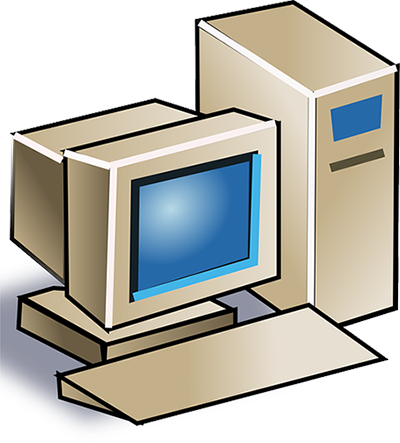

My first computer experience was with my family’s stationary computer. I cannot recall the brand, but I do remember that it was an ordinary stationary computer with a monitor, keyboard, mouse, and speakers. As I am the youngest of the three kids, I did not get to play with it much. Only occasionally, when my older brother and sister were occupied by something else, I would get a chance to “work” with the computer.

Home computer
It was pretty big
As I mentioned above, it was just an ordinary computer. It was relatively big, and there was a special place for it in our house. It took up a pretty big desk in our living room. Luckily, the living room was big enough. I don’t remember the brand, but it definitely had Intel Celeron CPU inside. It had pretty good speakers, and we would often listen to music on the computer. The operating system installed was Windows, though I don’t remember the version.
Used for entertainment mostly
I know that my sister used the computer mainly for the internet. When we got the computer, she created an email box and started to communicate that way with her friends. She also used it for social media. My brother used it for games and for music. We also had a program installed where we could train our typing skills. That one we all used. I myself wasn’t much interested in computers. I preferred to go out with my friends and do something together, like play hide and seek for example. But at times that did spend time with the computer, I played simple games (fx pinball), listened to music, or practiced typing.
My first impression
When my parents bought our very first computer, I felt like there something new appeared in my family’s life, but I did not completely understand why we needed it. It was used as entertainment, yet we all understood that it’s important to know how to work with it (or use it).